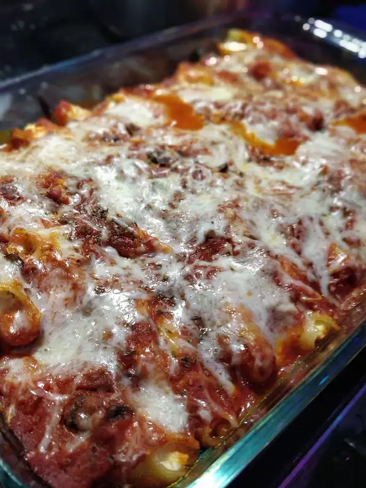

Stuffed Shells

Jumbo stuffed shells filled with three types of cheese
Cheesy stuffed shells are the perfect family-friendly comfort food. They're packed with ingredients you probably already have — and they're easy to customize when you want something new.
Ingredients
- 1 (12 ounce) package jumbo pasta shells
- 1 (32 ounce) container ricotta cheese
- 1 pound shredded mozzarella cheese, divided
- 8 ounces grated Parmesan cheese, divided
- 2 large eggs, beaten
- 1 tablespoon dried parsley
- 1 teaspoon salt, or more to taste
- 1 teaspoon ground black pepper
- 1 (28 ounce) jar pasta sauce
- 8 ounces sliced fresh mushrooms
Steps
- Preheat the oven to 350 degrees F (175 degrees C).
- Bring a large pot of lightly salted water to a boil. Add pasta and cook until tender yet firm to the bite, 8 to 10 minutes.
- While the pasta is cooking, mix ricotta cheese, 1/2 of the mozzarella cheese, 1/2 of the Parmesan cheese, eggs, parsley, salt, and pepper in a large bowl until well combined.
- Combine pasta sauce and mushrooms in a medium bowl. Add remaining mozzarella and Parmesan cheeses; stir until well combined.
- Drain shells. Stuff shells with ricotta mixture and place in a 9x13-inch baking dish. Pour pasta sauce mixture over the shells.
- Bake in the preheated oven until edges are bubbly and the shells are slightly set, 35 to 60 minutes.